Introduction
India’s culinary map is as diverse as its culture. Every region, city and community has developed its own flavours, techniques and food traditions over thousands of years. Below, you will explore five major regions of India — North, South, East, West and Central — with each region represented by five cities and their most iconic dishes, all displayed through flash-card style boxes for easy viewing.
North India

North Indian Cuisine
Known for wheat-based breads, creamy curries, aromatic spices and royal Mughlai cooking styles. North Indian food is rich, hearty and full of bold flavours.
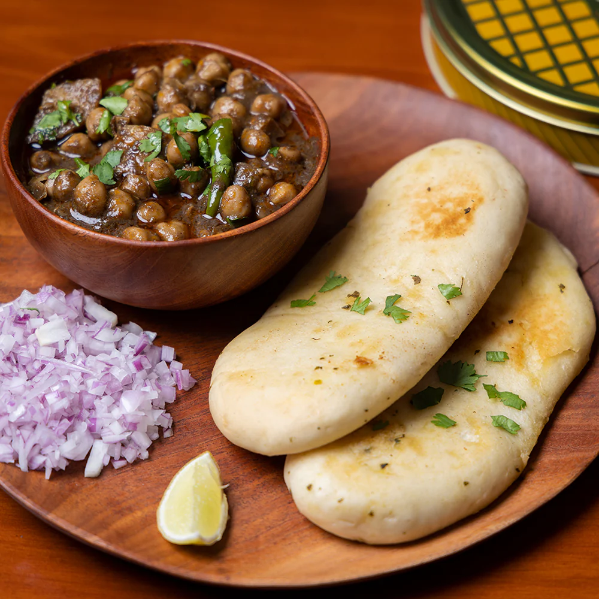
Amritsar – Amritsari Kulcha
Amritsari Kulcha is a stuffed wheat bread roasted in a tandoor, filled with masala potatoes, onions and coriander. Served with spicy chole, onion salad and pickle, it is a punch of flavours.
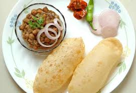
Delhi – Chole Bhature
A combination of spicy chickpea curry and deep-fried bhature, this iconic Delhi dish is filling, aromatic and full of Punjabi flavours, loved by everyone from students to travellers.
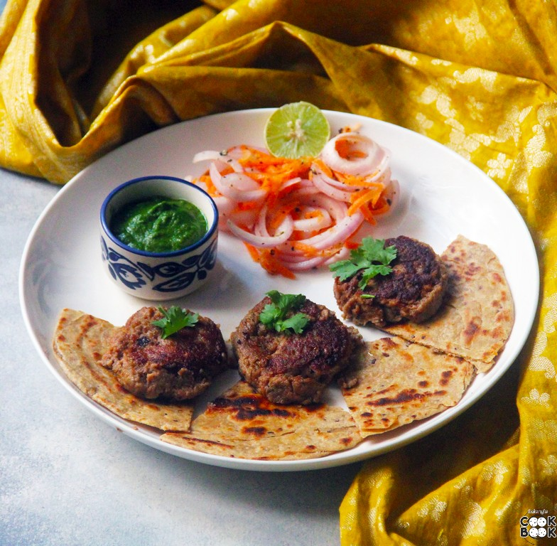
Lucknow – Galouti Kebab
Soft, melt-in-mouth kebabs prepared using finely minced meat and royal Awadhi spices. Created for a toothless Nawab, these kebabs represent luxury and precision in cooking.
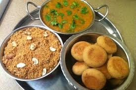
Jaipur – Dal Baati Churma
A traditional Rajasthani trio featuring spicy dal, fire-roasted baati and sweet churma. A dish showcasing desert survival food turned into a cultural delicacy.
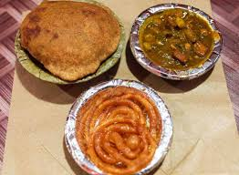
Varanasi – Kachori Sabzi
A perfect Banarasi breakfast combo featuring stuffed kachoris and hot potato curry. This dish captures the flavourful streets of Varanasi like nothing else.
North India – Dish Summary
| City | Dish | Description |
|---|---|---|
| Amritsar | Amritsari Kulcha | Stuffed tandoori bread. |
| Delhi | Chole Bhature | Spicy chickpeas with fried bhature. |
| Lucknow | Galouti Kebab | Melt-in-mouth kebabs. |
| Jaipur | Dal Baati Churma | Dal, baati and sweet churma. |
| Varanasi | Kachori Sabzi | Stuffed kachori with curry. |
South India
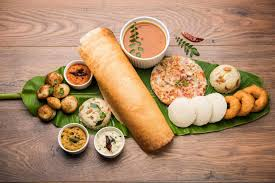
South Indian Cuisine
South India offers rice-based dishes, coconut-rich curries, tangy flavours and light, fermented foods like idli and dosa.
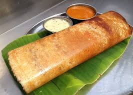
Chennai – Masala Dosa
A crispy, golden dosa stuffed with spiced potato filling and served with coconut chutney and sambar. The fermentation gives a tangy taste, making it loved worldwide.
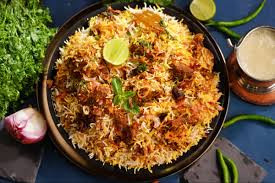
Hyderabad – Biryani
Layered basmati rice and tender meat cooked with saffron, ghee and spices. A royal dum-cooked dish famous for its aroma and flavour depth.
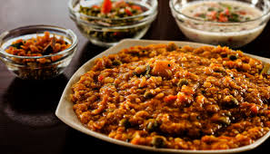
Bengaluru – Bisi Bele Bath
A hot rice-lentil dish made with special masala, vegetables and tamarind. It is a favourite wholesome meal throughout Karnataka.
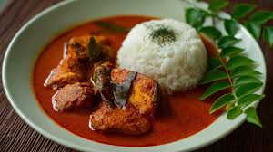
Kochi – Kerala Fish Curry
A tangy coconut-based curry with fresh coastal fish. One of Kerala’s most iconic seafood dishes.
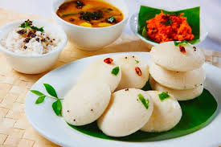
Madurai – Idli Sambar
Soft, steamed rice cakes served with spicy lentil sambar and chutney. A classic South Indian breakfast.
South India – Dish Summary
| City | Dish | Description |
|---|---|---|
| Chennai | Masala Dosa | Crispy dosa stuffed with masala. |
| Hyderabad | Biryani | Royal aromatic rice dish. |
| Bengaluru | Bisi Bele Bath | Hot rice-lentil mixture. |
| Kochi | Fish Curry | Coconut-based seafood curry. |
| Madurai | Idli Sambar | Soft idlis with sambar. |